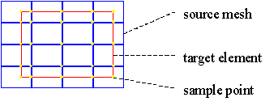
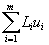

Weighted mapping incorporates the contributions of any elements in the source mesh that lie completely within the target element. This is not the case in the nodal interpolation method. A two step approach is used. The first step is to get values from the source mesh at the intersection points with the target element, and in the original source mesh nodes within the target element (see figure).

Samples are taken at the intersection points with the target element and in the original source mesh nodes within the target element
These values are then input for a weighted least squares method. The
weighting method can be either volume based,
or inverse volume based.
The least squares method assumes there is a function description using a set of parameters that need to be resolved from a number of input values. The function we use here is the shape function of the target element:

|
m |
is the number
of nodes on the target element |
|
Li |
is the shape
function for node I |
| ui |
is the value in
node i |